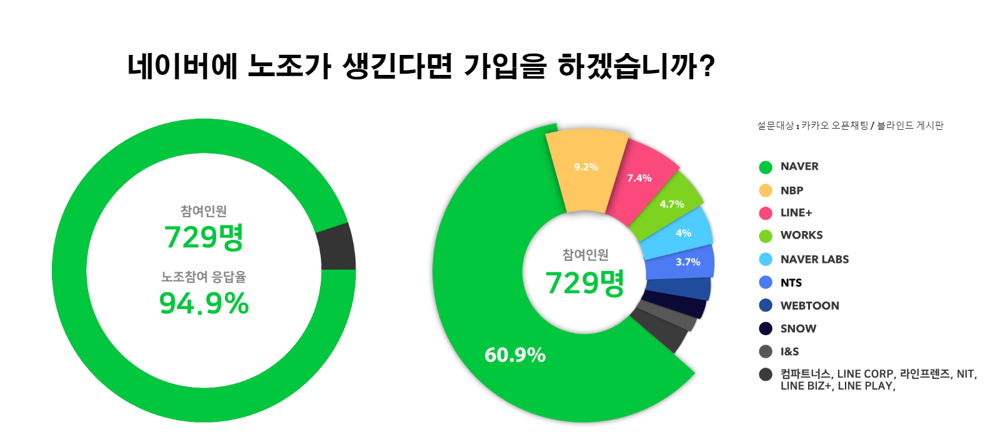

FAQ
노동조합이 낯설고 아리송한 여러분을 위해 정리한 자문자답 페이지입니다.
궁금하신 내용은 <카카오톡 플러스친구> 에게 문의해 주세요.
공동성명(共動成明)은 무슨 뜻인가요?
네이버 노조의 공식 명칭은 민주노총 화섬식품노조 네이버지회 입니다. 하지만 조금 더 친숙한 느낌을 주고자 “공동성명(共動成明)”이란 별칭을 함께 사용하고 있습니다. <공동성명>은 “함께 행동하여 네이버를 깨끗하게 성장시킨다”는 뜻입니다.
리더나 스탭(인사, 회계 등)도 가입할 수 있나요?
직무와 관계 없이 임원이 아닌 모든 직원분은 가입할 수 있습니다. 노동조합 및 노동관계조정법(이하 노조법) 제2조에 근로자는 자유로이 노동조합을 조직하거나 이에 가입할 수 있다고 명시하고있습니다. 단, “사용자 또는 항상 그의 이익을 대표하여 행동하는 자”는 참가할 수 없다고 명시하고 있기 때문에 임원은 가입할 수 없습니다.
조합비는 어디에 쓰이고 그 내역을 어떻게 알 수 있나요?
조합비는 조직활동비, 홍보, 교육, 조사연구, 연대활동, 노동안전보건, 회의비 등등의 항목으로 쓰여집니다. 예를 들어, 회의나 조합원 간담회(부서별 등)를 하면 자료 제작비용, 참가자들 식사 비용을 조합비로 지출합니다. 지출 내역은 상, 하반기 연2회의 회계감사를 받게됩니다. 또한 정기적으로 개최되는 총회 또는 대의원대회에 회계감사 결과와 결산 내역을 보고하고 승인을 받아야 하기 때문에 조합비는 투명하게 운영될 것입니다.
그동안 왜 노동조합 설립 과정을 공유하지 못했나요?
여러 사례를 보건데, 회사는 노동조합이 설립된다는 확신이 커질 수록 더 적극적으로 대응합니다. 노조를 성공적으로 설립하고 많은 분들과 함께하기 위해서는 초기 보안을 유지해야했습니다. 카카오톡 익명 채팅방은 외부인도 참여할 수 있어, 진행상황을 공유하기 어려웠습니다. 그래서 이제라도 여러 궁금증을 해소해드리려 합니다.
기업별 노조, 산업별 노조가 무엇인가요?
노조 조직형태에 따른 구분입니다. 같은 기업 노동자들끼리만 결성하면 기업별 노조, 동종 산업에 종사하는 노동자들끼리 결성하면 산업별 노조가 됩니다. 그런데 기업별노조는 일본과 우리나라에만 주로 존재하고 서구유럽에는 기업별로 노조를 하는 나라가 없습니다. 산업별로 크게 뭉쳐야 더 큰 힘이 생기기 때문입니다. 우리나라에 기업별 노조가 아직 있는 것은 과거 군사독재정권이 법으로 기업별노조를 강제했던 잔재가 아직까지 남아있기 때문입니다.
왜 산별노조를 선택했나요?
기업별 노조는 법인별로 노조를 따로 만들어야 합니다. 네이버엔 "Naver, 라인플러스, NBP, NTS, 네이버랩스, 네이버 웹툰 ..." 등 다양한 법인이 있고, 법인간 이동도 자유로운편입니다. 네이버의 모든 분들과 함께하기 위해 산별노조를 선택하였습니다.
왜 민주노총 화섬식품 노조를 선택하였나요?
회사는 많은 권한을 갖고 있고, 노조 상대 경험이 많은 대형 노무 법인과 계약할 수 있습니다. 그에 비해 우리는 노조 설립이 처음이라 저희를 도와줄 분들이 필요했습니다. 어떤 산별노조에도 우리와 같은 IT기업이 없어, 오로지 전문적인 역량을 갖추고, 저희를 위해 헌신해줄 수 있는 곳을 찾았습니다. 정의당 비상구의 도움을 받아 민주노총 화섬식품 노조를 소개받았고, 전폭적인 지원을 해주었기 때문에 노조 설립 파트너로 선택하였습니다. 앞으로 노조를 운영하고 교섭을 하는데 많은 도움을 받을 수 있을 것 입니다. 참고로 최근 파리바게뜨 노조 설립에 도움을 준 곳도 민주노총 화섬식품 노조입니다.
민주노총 화섬식품 노조에 휘둘릴 위험은 없나요?
화섬식품 노조는 네이버 노조에 권한을 위임하며, 네이버 노조의 결정은 오로지 네이버 노조원들의 의사에 따릅니다. 화섬식품에 속한 120여개의 단위노조도 마찬가지로 운영되고 있습니다. IT산업의 정책적 문제나 법제도적 문제에 대응해야할 일이 생기면, 화섬식품노조의 힘이 많은 도움이 될 것입니다.
네이버에 많은 법인들이 있습니다. 네이버가 아닌 다른 법인 직원들도 가입할 수 있나요?
네이버 노조는 모든 법인을 하나로 묶어 활동합니다. 법인마다 노조원들이 많아지면 특정 법인은 분회를 구성할 수도 있습니다. 네이버에 다양한 법인들이 있지만 사업과 운영의 실질적 결정권은 네이버에 있기 때문에 다양한 법인 소속 노동자들도 함께 뭉치는 것이 맞다고 생각합니다.
회사에서 노조가 설립되면 보통 어떻게 대응하나요? 다른 사례가 궁금합니다.
노조가 설립되면 회사는 노조(소위 어용노조)를 만들어 복수노조로 노노갈등을 유발하거나, 직원들 임금이나 복지를 대폭 개선시켜 “노조 안해도 우리는 다 해준다”는 분위기를 만들어 노조를 고립시키려 합니다. 그렇게 노조 힘이 약화되면 노조를 처음에 만든 사람들에게 불이익을 주고 노조를 와해시킵니다. 회사는 노조가 없던 때로 돌아가고, 다시는 노조를 만들지 못하도록 감시를 강화합니다. 하지만 저희는 회사의 동등한 파트너로 인정을 받고 회사를 더 좋게 만들기 위해 노조를 만들었고, 노조는 헌법에서 보장하고 있는 정당한 권리이기 때문에 공정, 투명을 강조해온 회사가 이런 식으로 대응하진 않으리라 믿습니다.
- 사례1 : “발레오전장노조” 의 기업별 노조 전환 - (기사링크)
산별노조형태로 있던 “발레오만도” 지회를 와해할 목적으로 “창조컨설팅”과 공모해 직장폐쇄를 강행하고, 보이지 않게 친기업노조 설립을 지원했습니다. 결국 조합원 총회를 열어 기업노조로 전환 된 이후 어용화 되어 버린 케이스입니다.
- 사례2 : “파리바게뜨” 사례 - (기사링크)
파리바게뜨의 제빵사 불법파견 문제로 노동조합이 설립되고 직접고용 명령을 내렸으나, 정직원만 가입된 한국노총 산하 기업별 노조(제 2노조)와 총연합에 가입안된 기업별 노조(제 3노조)가 생겨서 총 3개의 복수노조가 탄생했습니다. 회사는 본인에게 유리한 의견을 내는 노조를 지지하고 결과적으로는 갈등이 조장되고 있습니다
회사에서 노조 가입 여부를 알고 불이익을 주진 않을까요?
노조법에 따르면, 노조 활동을 이유로 회사가 불이익을 주거나, 노조 가입과 활동을 방해하면 부당노동행위로 처벌받게 됩니다. 정부도 “노조의 결성을 가로막는 여러 사용자 측의 부당노동 행위는 강력한 의지로 단속하고 처벌할 것” 이라고 밝혔습니다. 노조의 힘은 가입자 수에 비례하기 때문에, 가입인원이 많을수록 회사측에서는 부당행위를 하기 힘들어 집니다. 그래서 많은 분들이 노조에 가입해주셔야합니다.
노동조합 가입은 늦게 해도 상관없나요?
노동조합이 힘을 얻고 정착하려면 초기에 많은 가입자를 확보해야합니다. 노조가 생겼는데 가입하는 사람이 별로 없으면, 회사는 노조를 깨도 큰 문제가 되지 않는다고 생각할 것입니다. 카카오톡 오픈채팅방, 블라인드에서 아래와 같은 설문을 진행하였습니다. 많지 않은 분들을 대상으로 한 설문임에도 투표해주신 대부분이 가입을 하겠다고 하셨습니다. 덕분에 저희도 노조 설립 준비를 잘 진행할 수 있었습니다. 많은 분들이 함께 하실겁니다. 주저하지 마시고 바로 가입해주세요. 우리가 하는 말이 혼잣말이 아니라 하나된 목소리라는걸 증명할 때입니다. 
노조가 사원들의 의견을 잘 받아들이고 올바르게 잘 유지되려면 어떻게 해야하나요?
노조는 노조원들의 의견대로 민주적으로 운영되는 곳입니다. 노조의 대표는 투표로 결정하고 잘못된 방향으로 나갈 경우 탄핵도 할 수 있습니다. 네이버 노조는 노조원들의 의사를 들을 수 있는 다양한 소통채널을 마련할 예정입니다. 노조 밖에서 관망할 것이 아니라 노조에 가입하여 목소리를 지속적으로 내셔야 노조와 회사 모두 올바른 방향으로 갈 수 있습니다.